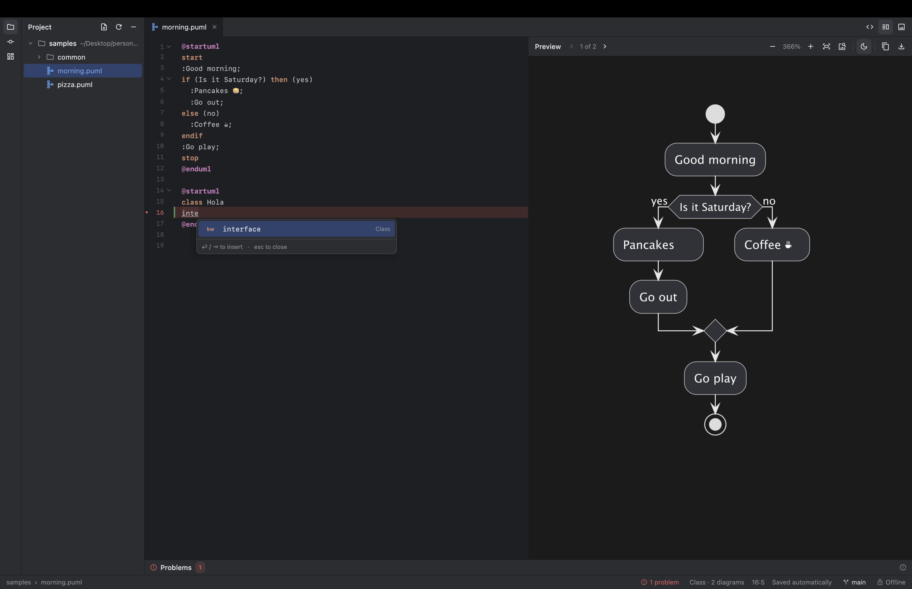
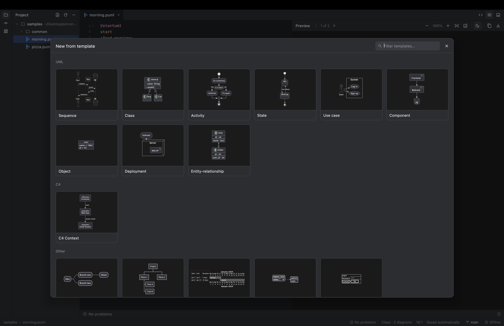
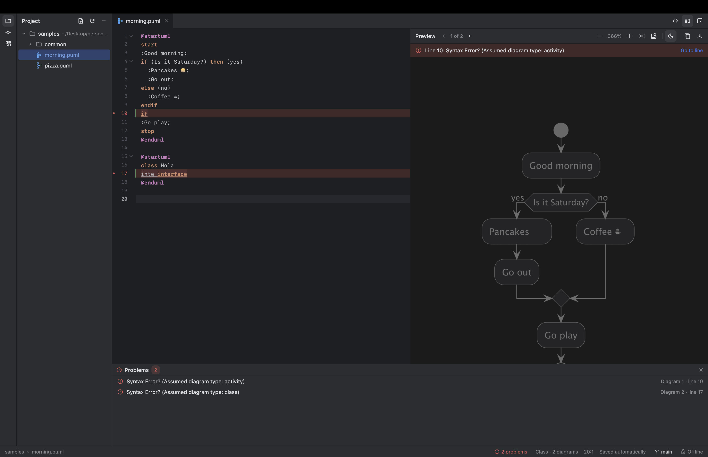
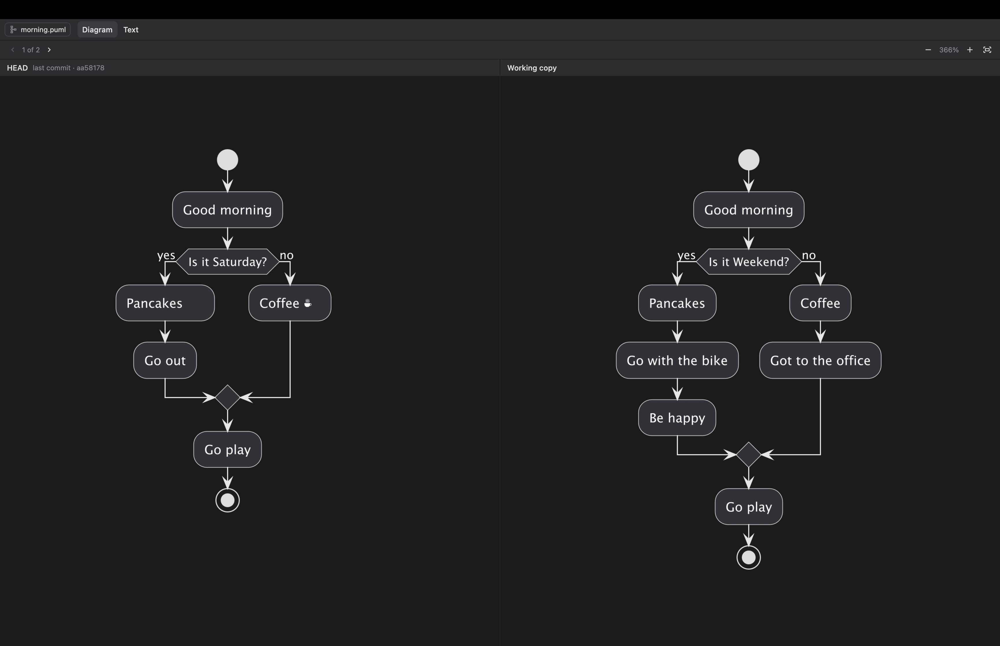
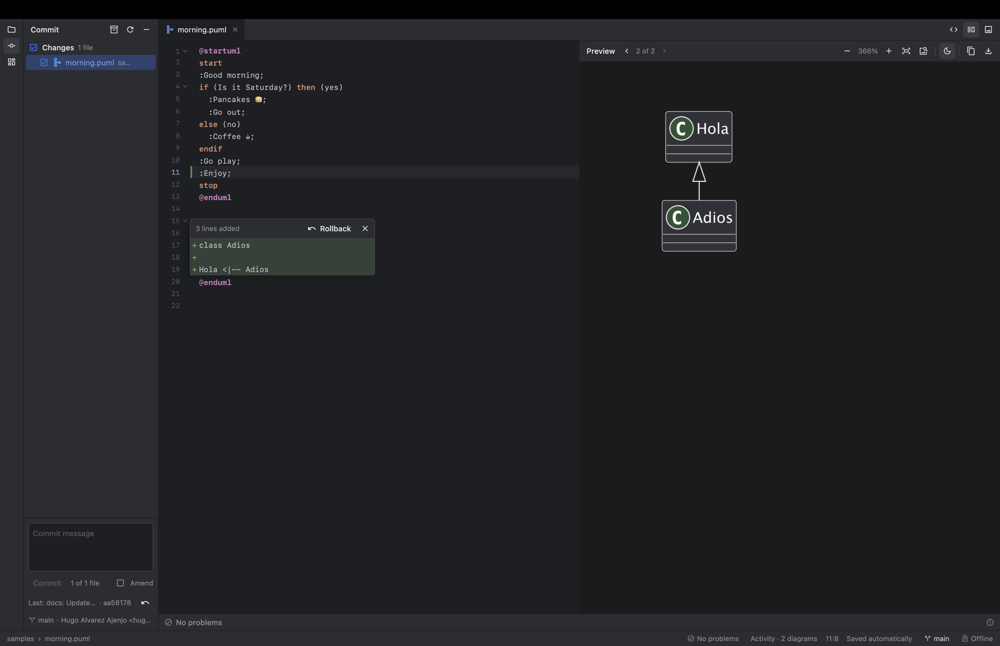
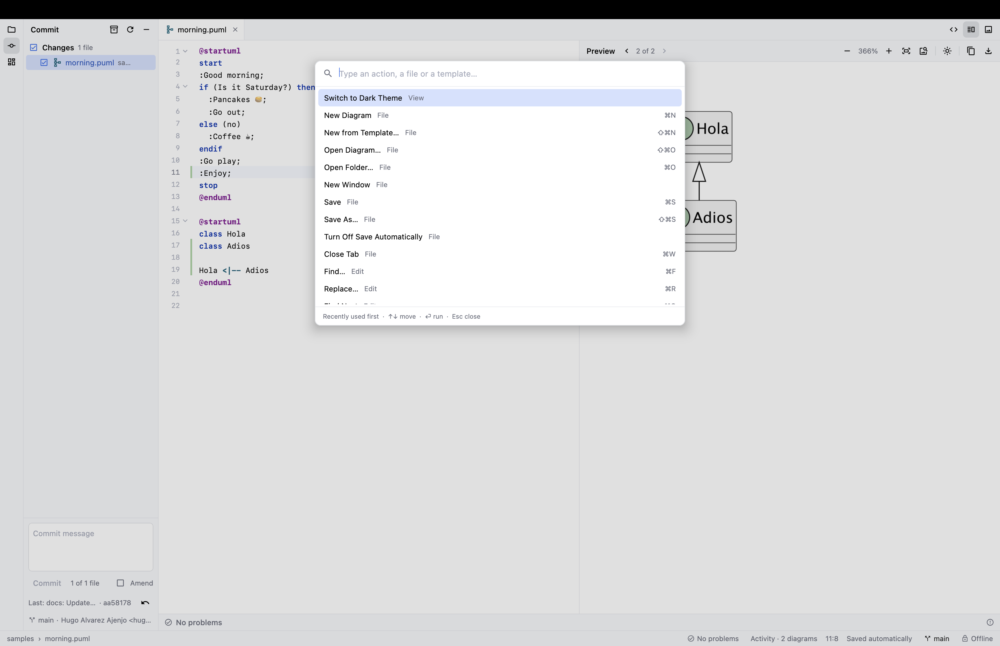

Start from a template
Not sure of the syntax? Pick a diagram from the gallery (⇧⌘N) or the side panel and edit from there.
- Sequence, class, activity, state, ER, C4…
- Blocks too: notes, alt/else, loops
A lightweight desktop studio for PlantUML with a live preview, a smart editor and built-in Git. Everything runs on your machine: no server, no Graphviz, no network.
Free and open source · Apple Silicon · ships its own Java runtime


Built like a JetBrains IDE, focused on one thing: writing PlantUML fast.
The diagram redraws as you type. Zoom, pan, several diagrams per file, and an optional dark diagram.
Completion that knows the diagram type and your participants, smart indent, folding, find & replace with regex.
A gallery of UML, C4, mindmap, Gantt, JSON and wireframe diagrams, each with a live thumbnail.
Every error in the file, marked in red in the editor. Click one to jump straight to it.
Change bars, per-block rollback, branches, commit, amend, stash, history. Local only, nothing is pushed.
PlantUML runs inside the app with its pure-Java layout engine. Remote includes are refused.
Double-click a .puml in Finder for an instant preview that follows the file as it changes.
A command palette (Shift Shift) with every action, your diagrams and recent projects.
Real screens from the app.
Not sure of the syntax? Pick a diagram from the gallery (⇧⌘N) or the side panel and edit from there.

PlantUML stops at the first error. SproutStudio keeps going and lists them all, across every diagram in the file.

See the last committed version of a diagram next to the current one, sharing zoom and pan. A text diff is one tab away.

Click a change bar in the gutter to see that block's diff and roll it back. Commit, switch branches and stash from the app.

Dark by default, light when you want it. The diagram has its own dark mode, and exports always keep the original colours.

Nothing else to install: Java and Git come inside the app.
Get the latest .dmg from Releases.
Open the .dmg and drag SproutStudio into Applications.
The app is unsigned: right-click it and choose Open once. After that it opens normally.
Or from the terminal: xattr -dr com.apple.quarantine /Applications/SproutStudio.app
Kotlin and Compose for Desktop, packaged with jpackage.